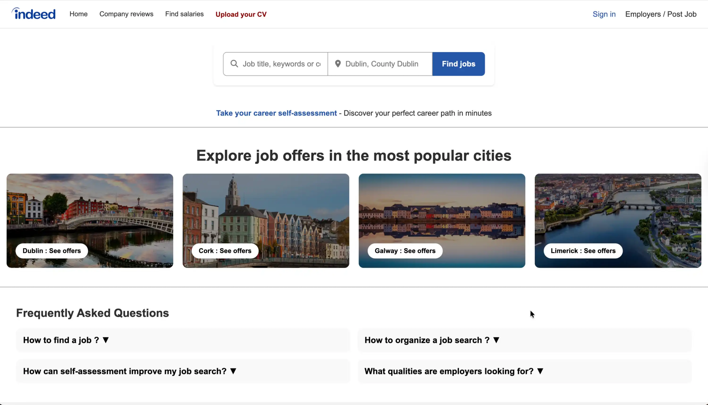

UX Evaluation · Accessibility Review · Redesign Prototype
Indeed Ireland Redesign
A UX evaluation and redesign of Indeed Ireland, focused on improving job search clarity, accessibility and decision-making.
UX research, heuristic evaluation, accessibility review, UI redesign and front-end prototype
HTML, CSS, JavaScript, WebAIM WAVE and Nielsen’s usability heuristics
Job search experience, accessibility, error prevention and comparison tools
HCI coursework · Academic redesign prototype
Prototype preview
Making job search feel clearer, calmer and easier to navigate.
Instead of sending users directly into job listings, the redesign introduces a more structured homepage with clearer entry points, guidance tools and support for decision-making.

01
Project overview
This project focused on evaluating and redesigning the Indeed Ireland website to improve the job search experience for users.
I analysed the platform through Nielsen’s usability heuristics and WebAIM WAVE, identifying usability issues, accessibility barriers and opportunities to make the experience clearer and more supportive.
Job search can feel stressful, repetitive and unclear.
Nielsen’s heuristics and WAVE helped identify friction points.
A clearer homepage, guided tools and stronger decision support.
02
UX audit & accessibility
I evaluated the platform using Nielsen’s heuristics, focusing on system status, real-world language, user control, consistency and error prevention.
The audit highlighted moments where users could feel unsure, especially when applying for jobs, using filters, submitting forms or moving between Indeed and external application websites.
I also used WebAIM WAVE to review accessibility issues such as missing alternative text, redirects, redundant links and noscript elements.
03
Redesign direction
The redesign introduced a more structured homepage instead of sending users directly into job listings. The goal was to create a clearer starting point for different types of job seekers.
I added guided entry points such as CV upload, career self-assessment, job comparison, country-based browsing, FAQ support and a clearer footer hierarchy.
Redesign examples
From direct listings to a clearer homepage flow.
The redesign introduced a more supportive entry point, including CV upload, career assessment, job comparison and search error prevention.
A clearer entry point for users who want to start from their profile or existing CV.
A self-assessment tool to help users think about skills, interests and possible directions.
A feature for comparing roles more easily instead of opening multiple listings separately.
A clearer way to browse opportunities by city, country or international Indeed pages.
Support content designed to answer common questions without overwhelming the page.
A reorganised footer with clearer grouping, hierarchy and navigation.
Footer redesign
Clearer secondary navigation.
The footer was reorganised into clearer groups to improve hierarchy, scanning and findability.
04
Front-end prototype
I built the redesign as a front-end prototype using HTML, CSS and JavaScript.
This helped me test the homepage structure, interactive FAQ, job comparison concept, CV upload idea and search error-prevention behaviour directly in the browser.
05
Reflection
This project helped me understand that UX is not only about making an interface look cleaner. It is also about reducing uncertainty, preventing errors and helping users make decisions with more confidence.
The redesign focused on making job search feel less overwhelming by giving users clearer entry points and stronger support before they reach listings.